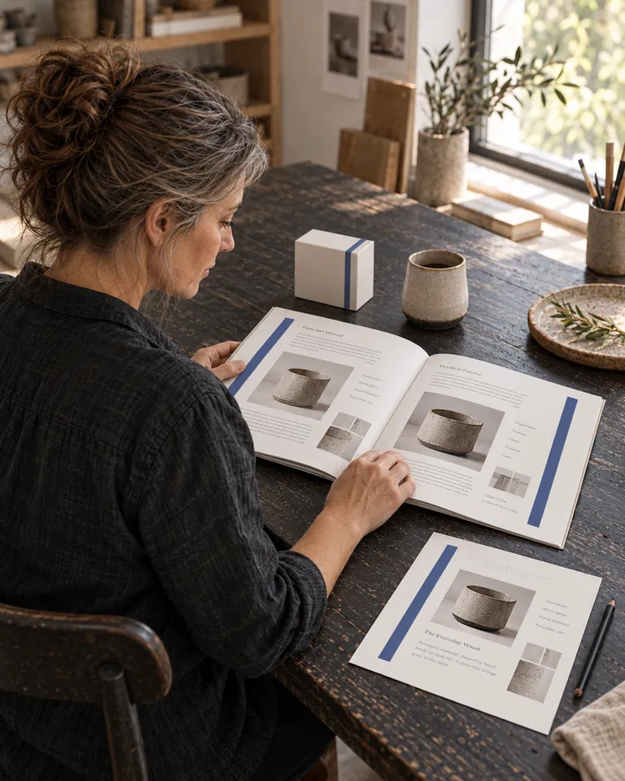
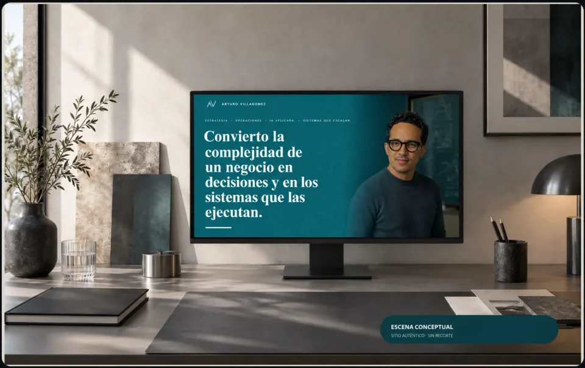
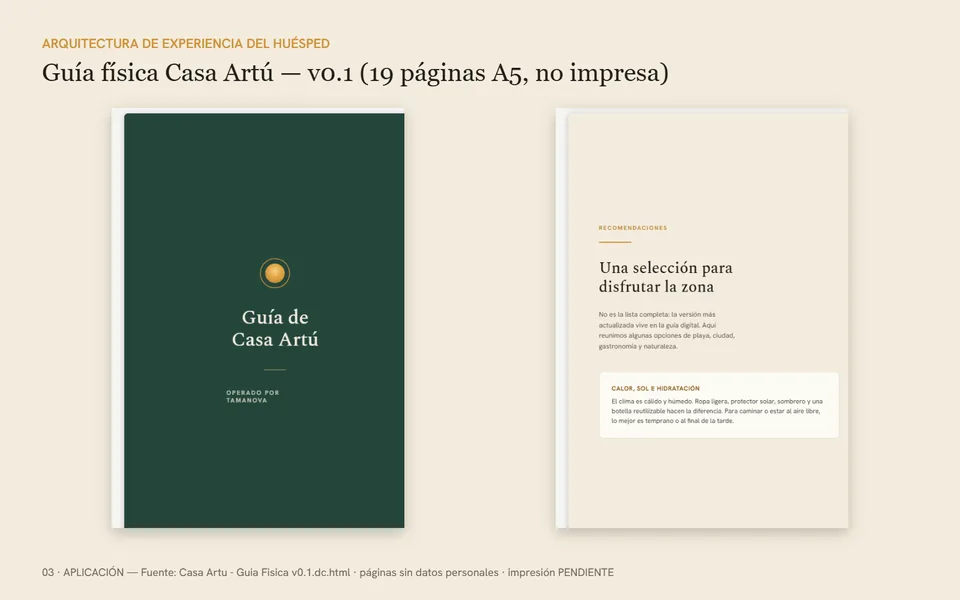

Te conocen, pero no por lo que realmente haces.
Revisamos cómo explicas tu oferta y qué ejemplos ayudan a evitar confusiones.
Estrategia e identidad de marca
Conectamos lo que haces, cómo lo explicas y cómo te presentas para que las personas entiendan por qué elegirte.
Construimos mensajes, identidad visual y herramientas que puedas usar en tus redes, propuestas y sitio.
Primero entendemos tu negocio. Después recomendamos qué trabajar.

01 · Una marca para lo que viene
Al lanzar una oferta, necesitas una dirección y una presencia propias. Si tu negocio ya está en marcha, revisamos qué funciona y qué conviene actualizar para representar su siguiente etapa.
Revisamos cómo explicas tu oferta y qué ejemplos ayudan a evitar confusiones.
Acordamos qué debe reconocerse en tu mensaje y en tu imagen, aunque cambie el formato.
Convertimos decisiones de marca en reglas y recursos que tu equipo pueda aplicar.
02 · Del conocimiento del negocio a una marca utilizable
Un sistema de marca reúne las decisiones y herramientas para comunicar con consistencia. Esto es lo que podemos construir contigo, según el alcance que acordemos.
Qué ofreces, a quién ayuda y por qué puede ser una buena elección. Una forma de hablar que conserve tu experiencia y sea comprensible para los demás.
Logo, colores, tipografías e imágenes que funcionen juntos. Revisamos qué merece conservarse antes de proponer un cambio.
Una guía y recursos utilizables para que el siguiente diseño no dependa de reconstruir todo lo que ya decidiste.
03 · La identidad, puesta en uso
Estas selecciones del portafolio permiten ver aplicaciones de marca. Puedes consultar sus destinos públicos; los ensambles no demuestran resultados comerciales.

01 · Marca personal · sitio público
Un lenguaje editorial para explicar experiencia, criterio y formas de trabajar.
Explorar el sitio Ensamble ilustrativo de aplicaciones; no cifras de desempeño.
02 · Hospitalidad · propiedad verificable
Identidad y materiales para acompañar una experiencia de hospedaje con una oferta real.
Ver la propiedad Aplicación de marca ilustrativa; el enlace verifica la propiedad, no la fabricación del material.El orden importa
Tu historia, tu oferta, tus clientes y lo que hoy te cuesta explicar.
Revisamos qué conservar y qué cambio puede ser más útil en esta etapa.
Revisamos contigo una muestra del mensaje y el diseño en un uso concreto.
Entregamos los archivos, reglas y recursos del alcance acordado.
04 · Inversión según el trabajo necesario
Primero entendemos el problema y el cambio que buscas. Después hablamos de inversión y de qué puede resolverse en una primera etapa.
Rangos orientativos en pesos mexicanos (MXN), por proyecto. No incluyen IVA. El precio y los entregables se confirman en la propuesta; no son una mensualidad.
Esencial
Mensaje, base visual y reglas para dejar de resolver cada pieza desde cero.
18–30 mil MXN
Por proyecto · no incluye IVA
Revisar si es mi punto de partidaCompleto
Mensaje, identidad y aplicaciones para mantener consistencia entre tus canales.
31–60 mil MXN
Por proyecto · no incluye IVA
Revisar qué necesita mi marcaExtendido
Una guía más amplia, archivos y plantillas para coordinar equipos y proveedores.
61–120 mil MXN
Por proyecto · no incluye IVA
Revisar el alcance de mi equipo¿Todavía no sabes cuánto necesitas invertir? Puedes indicarlo en el diagnóstico. Si conviene empezar por una etapa, explicaremos qué incluye y qué quedaría después. Contenido recurrente y desarrollo web se cotizan por separado.
Antes de decidir
Sí. Trabajamos desde México, de forma remota, con profesionales, emprendimientos y empresas de habla hispana. Revisamos tu situación y acordamos el alcance y los horarios antes de empezar. Los rangos del sitio están en MXN y no incluyen IVA; la cotización confirma las condiciones de tu proyecto.
No necesariamente. Primero revisamos qué conviene conservar y qué impide que la marca represente al negocio actual. No cambiamos un activo solo por novedad.
Sí. El sistema de marca se puede contratar como proyecto independiente. Los archivos, reglas y plantillas incluidos se acuerdan para que puedas trabajar con tu equipo o tus proveedores. La producción continua de contenido se cotiza aparte.
Los rangos orientativos por proyecto son: esencial, 18–30 mil MXN; completo, 31–60 mil MXN; extendido, 61–120 mil MXN. No incluyen IVA. El precio final depende del alcance acordado, no de una suscripción.
Arturo revisa personalmente cada solicitud. Si hay información suficiente y existe encaje, recibirás por correo o WhatsApp una lectura de las oportunidades prioritarias y una propuesta del siguiente paso. La orientación del formulario es preliminar; no sustituye esa revisión.
Empecemos por tu situación
Unas preguntas para conocer tu momento, tus prioridades y los recursos con los que cuentas.
Arturo revisa personalmente cada solicitud. Si hay información suficiente y existe encaje, te contactará por correo o WhatsApp con las prioridades y una propuesta del siguiente paso.
La orientación en pantalla es preliminar. No necesitas tener sitio web ni saber de diseño para empezar.
Conoce a la persona detrás de Don Ventas